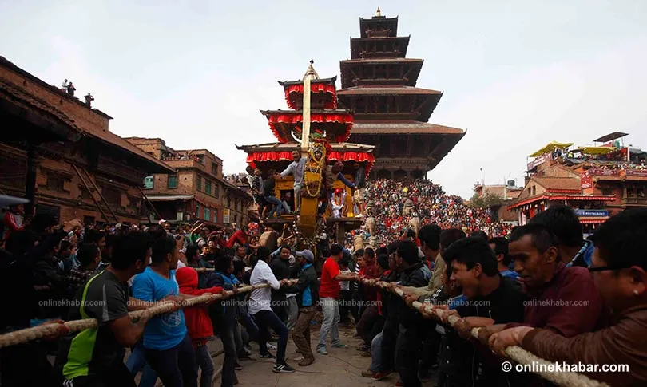
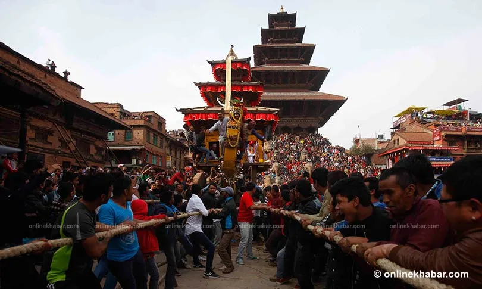
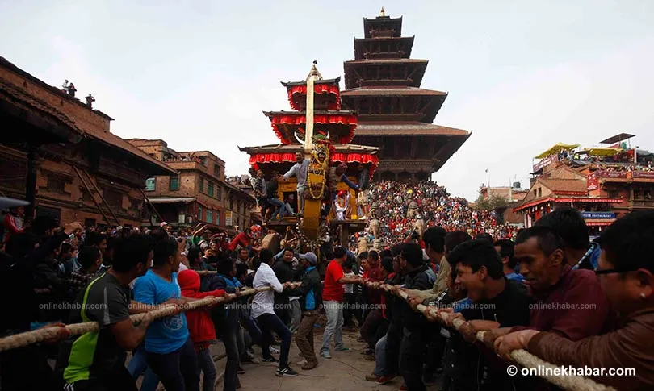

Biska Jatra is one of Bhaktapur’s most popular festivals. The aesthete considers it to be one of the city’s most valued festivals, with both cultural and historical significance. People welcome Basanta, or spring, through this Jatra, which is held in mid-April. Biska Jatra is the largest jatra celebrated in Bhaktapur. It is celebrated for eight nights and nine days, thus, is also known as the Chyacha Gunhuya Jatra, which translates to “eight-night and nine-day jatra.” This jatra is also known as Bisket Jatra and Vishwodhoj jatra.This might be the craziest festival that you have ever seen. The craze of people for this festival is just indescribable. Just to attend this festival, thousands of people from different parts of the country gather at Bhaktapur. There will be this many people that you can’t even surmise. It feels like the whole city is desolate and all people are in the streets of Bhaktapur.
The main attraction of this Jatra is the lyo sin dyo. That is also pronounced as lingo. It is a sky-high unbending pole that locals erect on the last day of the month, Chaitra. And then lie down in the next eve. Somehow, this process of lying the lingo down is well known as the Satruhanta Jatra which means seeing the downfall of your enemy. There is a common belief that whoever sees the lingo lying down to the earth, their enemy also meets the fall. This event falls on the very first day of the new year of Bikram Sambat (BS). That means Nepali new year, where the fact is that this biska jatra has no relation with the Nepalese new year. However, the day is also preferred as Vaishaka Sakranti, Mesha Sakranti, or Bisket Sakranti, besides Biska Jatra.
Admittedly, the Malla kings had heightened the importance of Biska jatra by adding a chariot festival to this event. People assemble and collide with the chariot of Bhairava and Bhadra kali against each other during the festival. The tug of war that will ensue as people pull the unequal number of ropes is thus biased toward the forward direction. This compensates in part for the comparative difficulties of the terrain in the two directions of the tug of war. Promptly, a tug of war begins to determine to which half of the city the chariot will go first. It is considered that the presence of the chariot represents a Darsana, a manifestation or “showing himself” of the deity Bhairava to that city half. The men from the lower half of the city try to pull the chariot out of Taumadhi Square into and along the Bazaar street to the south and then west as far as the Tekhaco twa. The people from the upper city try to pull it out of the square along Bazaar street to the north and east into their half of the city as far as Dattatreya Square. Moreover, the tug of war is the most dangerous part of this event which made out this festival one of the most dangerous festivals in the world
